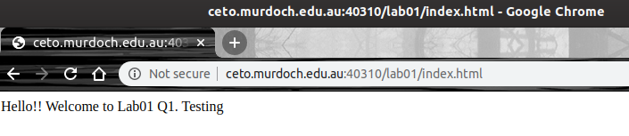
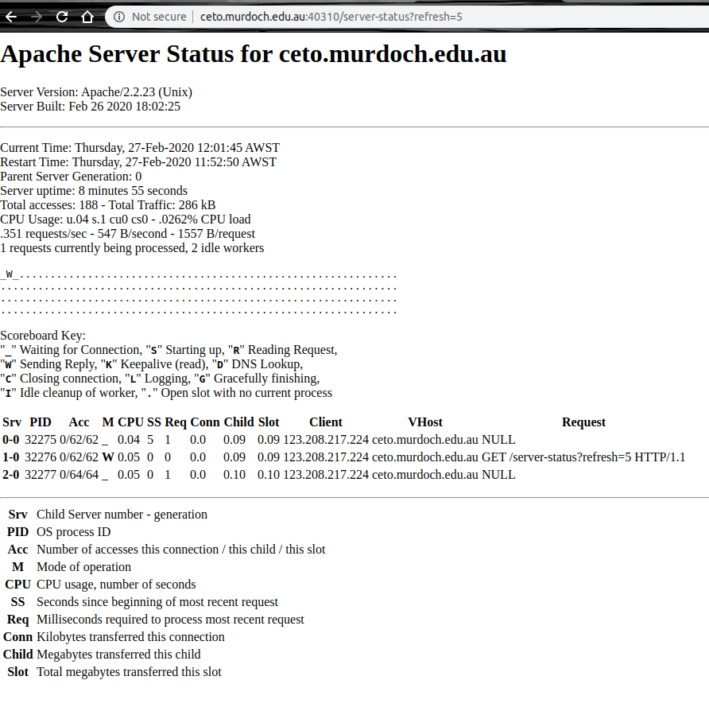
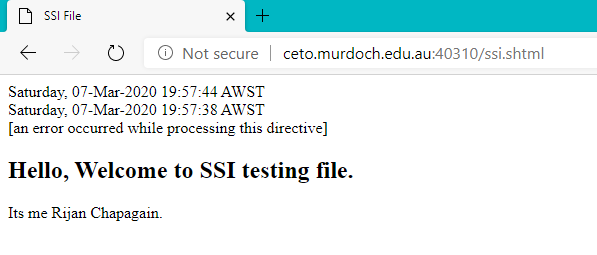

Added new files in htdocs directory and access those files via a browser using port number.
View of web server usage and status using a web browser after turned on extended mod_status .
After turning on server-side includes (SSI) server can process and serve it properly as shown below.
